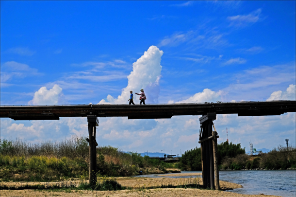
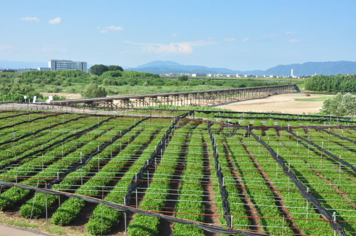
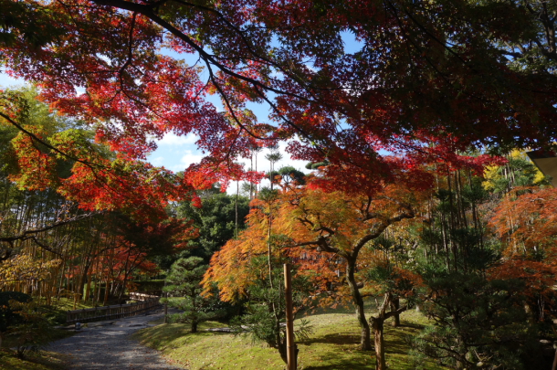
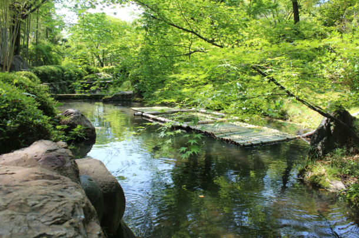
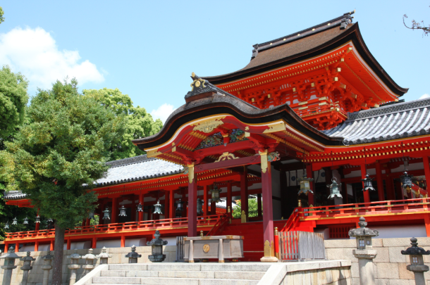
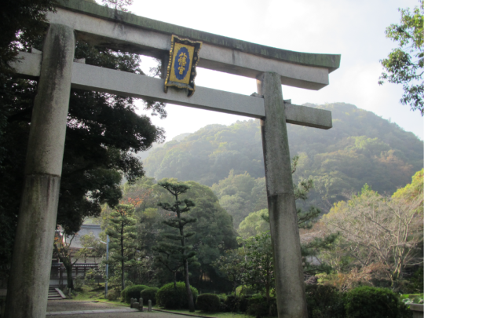

最新の情報は 公式サイトのツアーページ をご覧ください。
京都・八幡の隠れた名所巡り ～流れ橋と歴史の旅～
※大人・小人同額となります。
※1名様からご予約いただけますが4名様以上で運行します。
（※4名様以上でのお申込みで設定日以外でも運行可能です。お気軽にお問合せ下さい。）
※松花堂庭園とやわた走井餅老舗は月曜定休日です。
※旅行代金には拝観料が含まれております。
※拝観時はドライバーは同行いたしません。
| お申込み状況(最少催行人数4名) | ||||||
| 募集中 |
※最新のお申込み状況はお問い合わせください
※上記以外の出発予定日もお申込みいただけます
京都・八幡エリアには、歴史と自然が調和する隠れた名所がたくさんあります。
時代劇定番のロケ地として有名な流れ橋、平安時代から信仰を集める石清水八幡宮、航空安全のご利益で知られる飛行神社など、見どころ満載のスポットを訪れます。
さらに、江戸時代から続く老舗「やわた走井餅老舗」にも立ち寄り、伝統の味を楽しむこともできます。
京都市内から、ちょっと足を延ばしてみようかなと思っている方におすすめです。
歴史と風情を感じながら、心ほどけるひとときをお過ごしください。
行程
| 時間 | 場所 |
| 8:30 | 京都駅八条口MKタクシーのりば（集合・出発） |
| 9:10 | 流れ橋 |
| 9:45 | 松花堂庭園 |
| 10:30 | 石清水八幡宮 |
| 11:15 | やわた走井餅老舗 |
| 11:35 | 飛行神社 |
| 12:10 | 玉田神社 |
| 13:00頃 | 京都駅（解散） |
※拝観時はドライバーは同行いたしません。
※渋滞等で、行程の入替や、予定通りの滞在時間をお取りすることができない場合がございます。予めご了承ください。
流れ橋
木津川に架かる全長356.5m、日本最長級の木橋。
川の増水時に橋板が流れる構造から「流れ橋」と呼ばれ、時代劇などのロケにも利用されています。


写真提供／(一社)八幡市観光協会
松花堂庭園
約2万平方メートルの広大な庭園庭園では、梅や桜、青もみじ、紅葉など、四季を通して美しい景色が楽しめます。


写真提供／(一社)八幡市観光協会
石清水八幡宮
日本三大八幡のひとつとされている神社。
男山の中腹に涌き出ている霊泉”石清水”に因んでつけられた社名で、全国屈指の「厄除け」の神社として有名です。
そのほか、創建以来、公家と武家の信仰が篤く、源氏が氏神として崇めたことから、「必勝」の神社としても多く知られています。


写真提供／(一社)八幡市観光協会
飛行神社
安全な空の旅を祈願する場所として有名な神社です。
境内には「飛行」を連想するモノが多数あります。
また、飛行機の安全や航空関係者の守護を祈願した「飛守（とびまもり）」など、ユニークでかわいらしいお守りもあります。


写真提供／(一社)八幡市観光協会
玉田神社
710年に創建されたと伝えられ、古くから方除けや火難除けの守護神として信仰を集めています。
特に火難除けのご利益が知られており、現代ではこれにちなんで「SNS炎上除け守り」というユニークなお守りも授与されています。
また、願い事に応じて勾玉の色を選び、叶袋に入れる「叶・勾玉お守り」も人気があります。
MKメディアで各スポットのおすすめポイントを紹介中
-

京都の神社＆お寺のかわいい”動物”おみくじ13選
-

【2025年最新版】京都の梅が美しい名所おすすめスポット30選
-
-

車窓から楽しむ京都の美しい桜並木！MKタクシーのおすすめスポット9選
-

京都・八幡市の紅葉は石清水八幡宮だけじゃない！絶景のおすすめスポット8選
-
【MKトラベルLINE公式アカウント】
MKトラベルの新規ツアー情報をLINEでお届けいたします

【各SNSでも京都の情報やツアー情報をお届けしています】


旅行条件
| 出発地 | 京都市 |
| 添乗員／ガイド | 添乗員：なし（乗務員がその業務を代行いたします） |
| 食事 | 0回 |
| 最少催行人数 | 4名 |
お申込みについてのご注意
※最少催行人数は4名様です。最少催行人員に満たない場合は、旅行の実施を取りやめることがあります。出発の3日前にその旨をご連絡し、お客様から当社がお預かりしている旅行費用の全額をお返しいたします。
※旅行条件・旅行代金は、2025年2月1日現在を基準としています。
※行程および帰着時間は交通事情などにより変更になる場合があります。
※お申込みの前に弊社の募集型企画旅行規約をご確認ください。
よくある質問
Q.1名ですが、申し込みできますか？
A.はい。お一人参加の方もたくさんいらっしゃいますので、お気軽にお申し込みください。
Q.参加したかったけど、終了していました／日程が合いません
A.貸切で再現できる場合もございますのでご相談ください。お問合せフォームはこちら
＜お問合せフォームはこちら▶＞
＜MKトラベルTOPはこちら▶＞
＜おすすめツアー一覧はこちら▶＞
・クレジットカード
（コンビニ決済をご希望のお客様はお電話にてご予約お願いいたします）
お支払方法詳細はこちら
お客様のご都合でご予約をキャンセルされる場合は、すみやかに下記お問合せ先までご連絡ください。
キャンセル料
11日目に当たる日以前
無料
10日目に当たる日以降
20%
7日目に当たる日以降
30%
旅行開始日の前日
40%
旅行開始日の当日
50%
旅行開始後又は無連絡
100%